Product Overview
Soft furnishings define the comfort character of any hospitality space. Our fabric and upholstered hotel furniture collection covers the full spectrum of upholstered pieces required in a hotel project — upholstered hotel beds with fabric or leather headboards, fabric hotel sofas and upholstered hotel sofas for lobbies and suites, upholstered hotel chairs and commercial armchairs for guestrooms and public areas, and even fabric-wrapped tables, desks, and cabinets that bring warmth and texture to commercial interiors.
As a one-stop hotel furniture integrator, we coordinate upholstery specialists across our 19-factory Foshan partner network to deliver complete soft-furnishing packages that coordinate perfectly with your casegoods and millwork. Every upholstered hotel bed, fabric hotel chair, and upholstered hotel cabinet is crafted to meet the dual demands of guest comfort and commercial-grade durability.
Our fabric hotel furniture range is designed for the full project lifecycle — from initial material sampling and color approval through production, QC, and delivery. We handle the complexity of coordinating multiple upholstery categories so your procurement team manages one supplier relationship.
Product Gallery
Representative pieces from our current upholstery range. Every item is available with custom dimensions, foam density, fabric or leather, and COM/COL material handling to match your project specification.
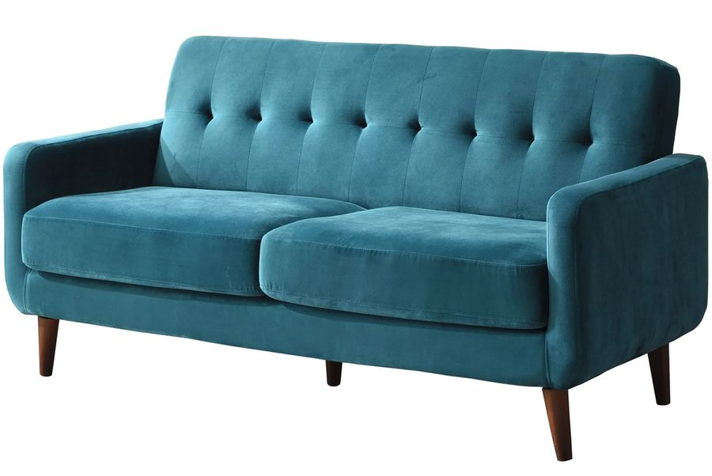
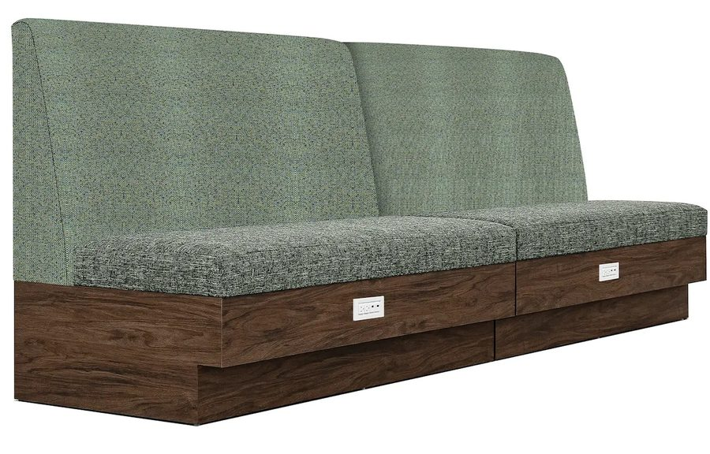
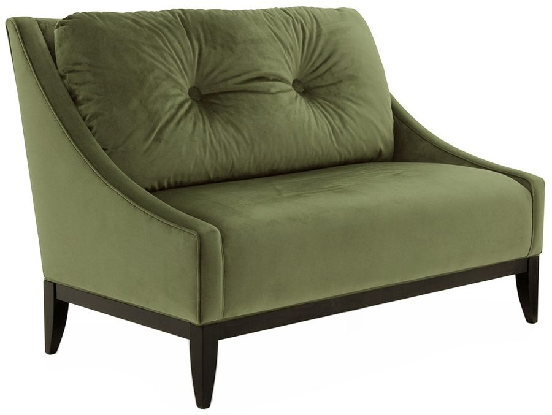
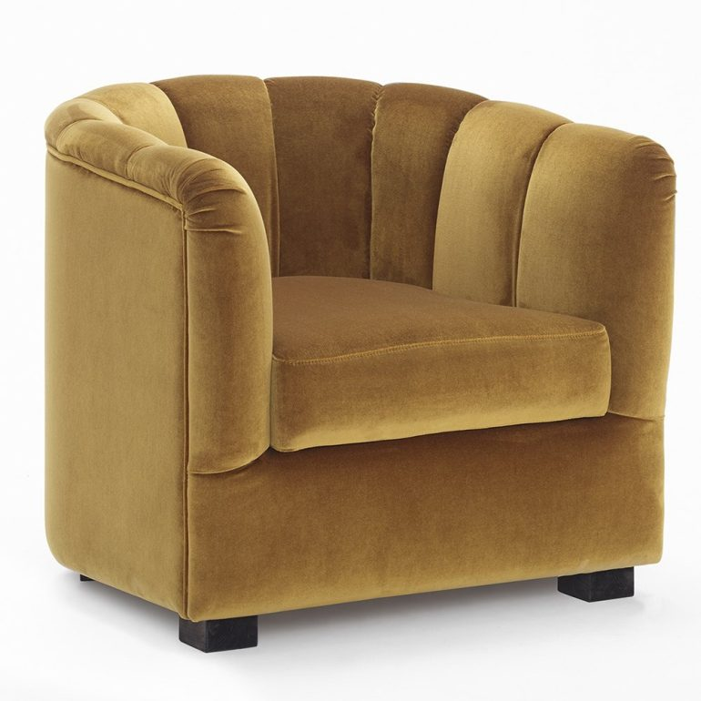
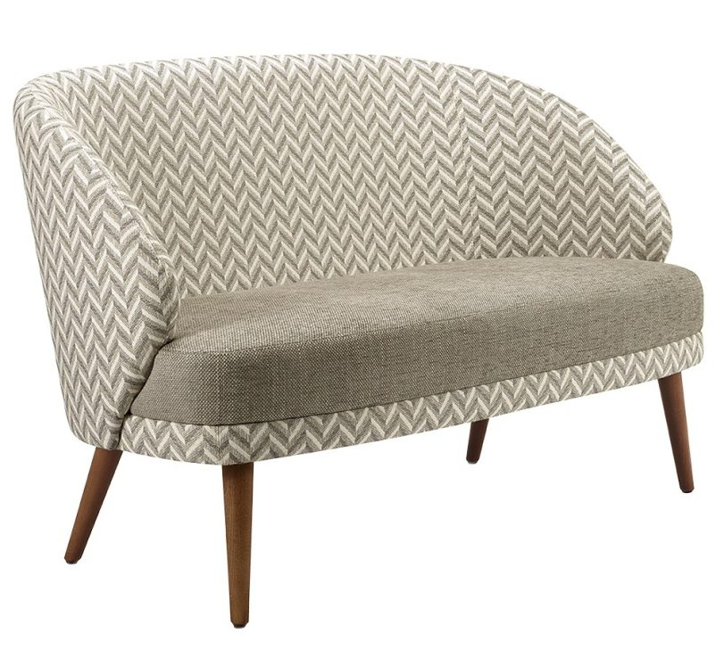
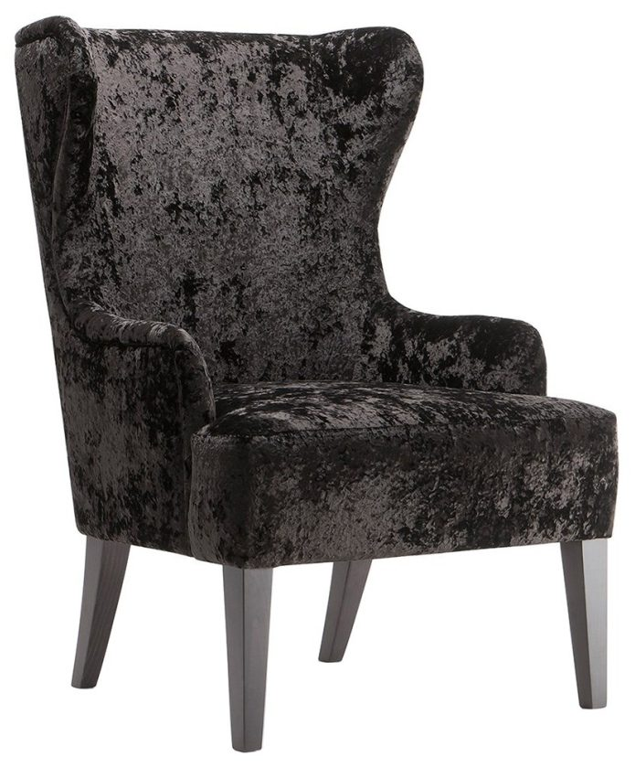
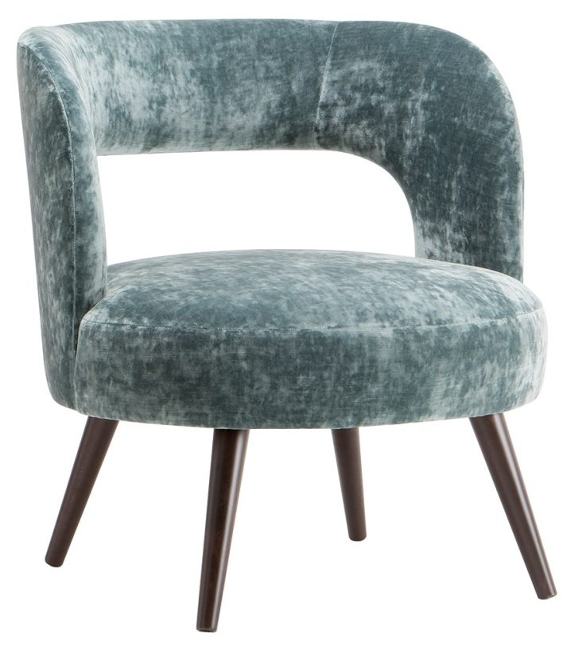
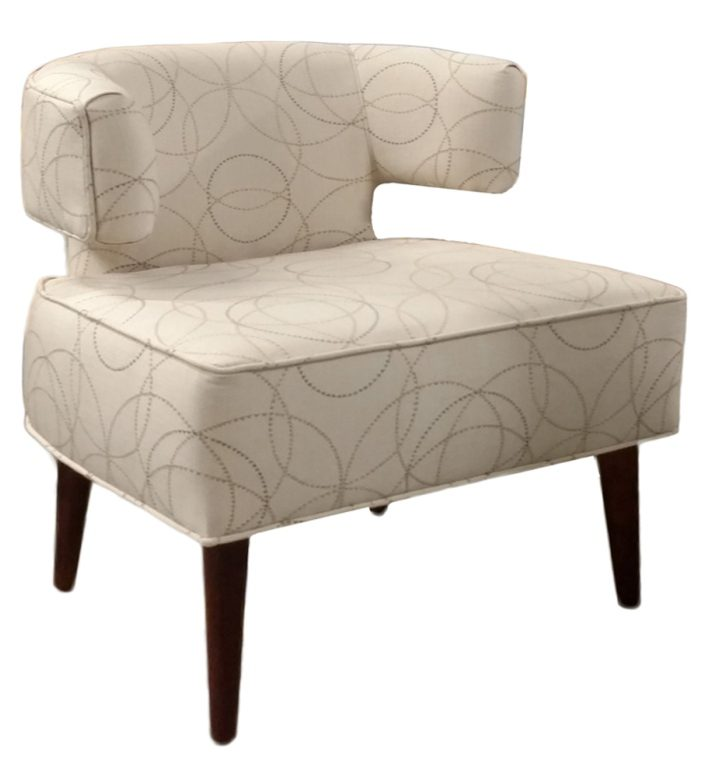
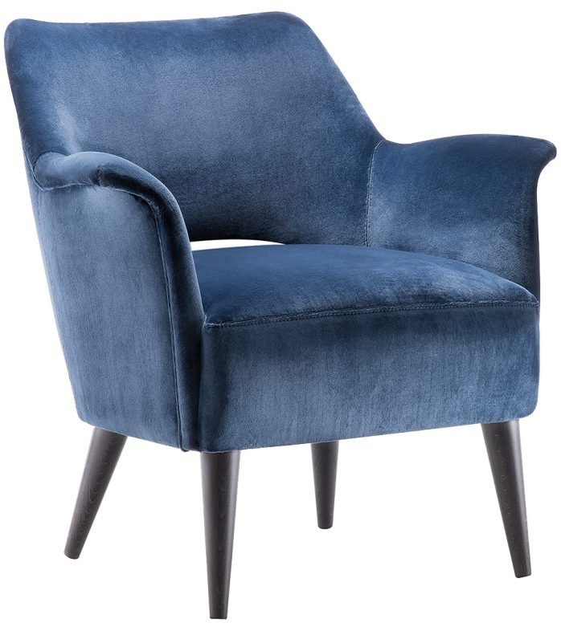
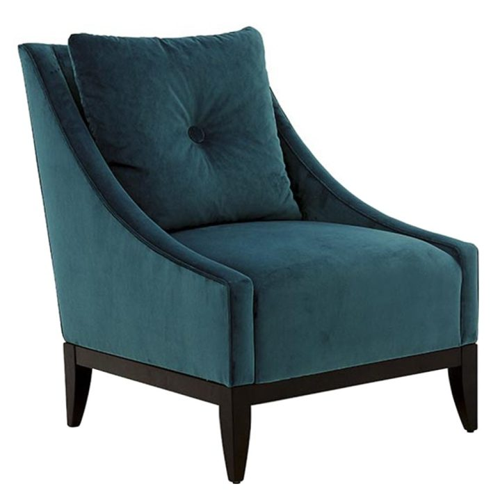
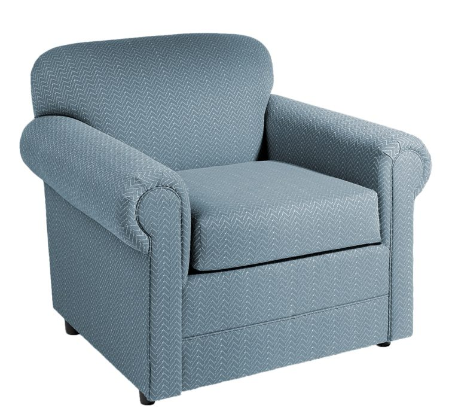
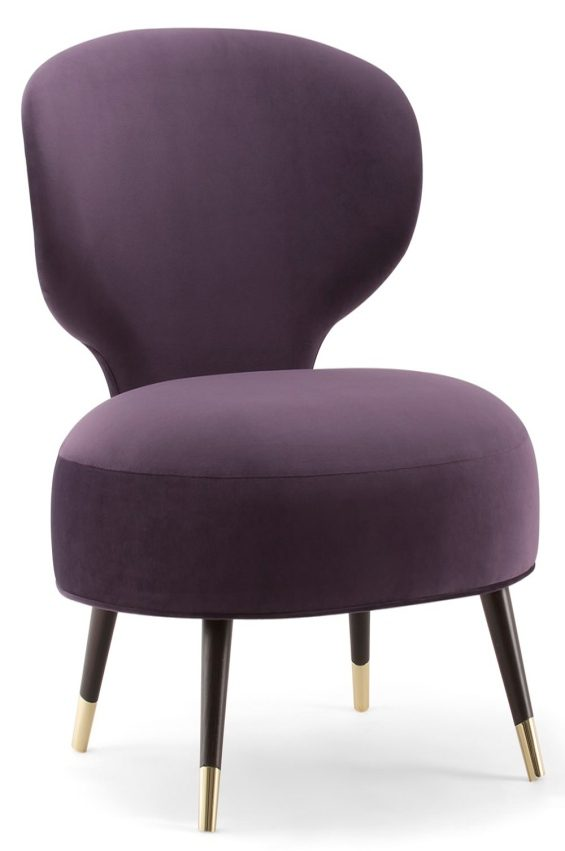
What Is Inside the Frame
The cover is the part you can see and the part that gets replaced. The frame, the spring unit and the foam are the parts that decide whether the chair still sits the same in year five, and they are the parts no catalogue photograph ever shows.
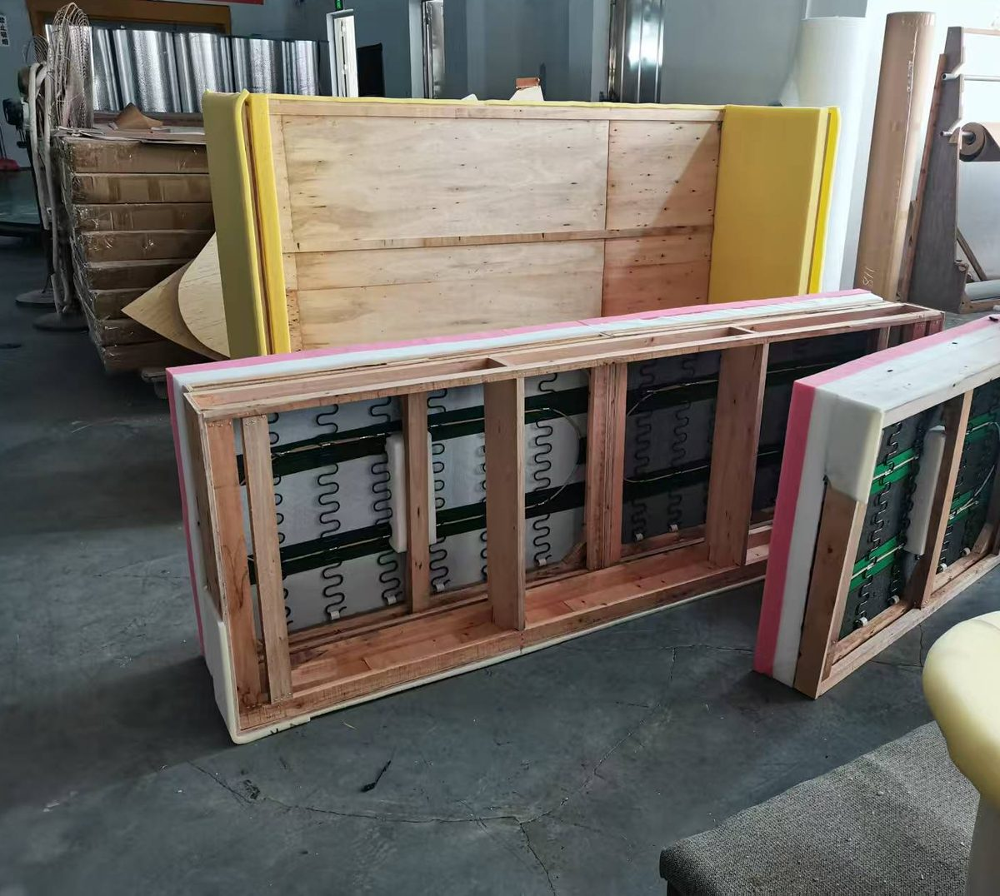
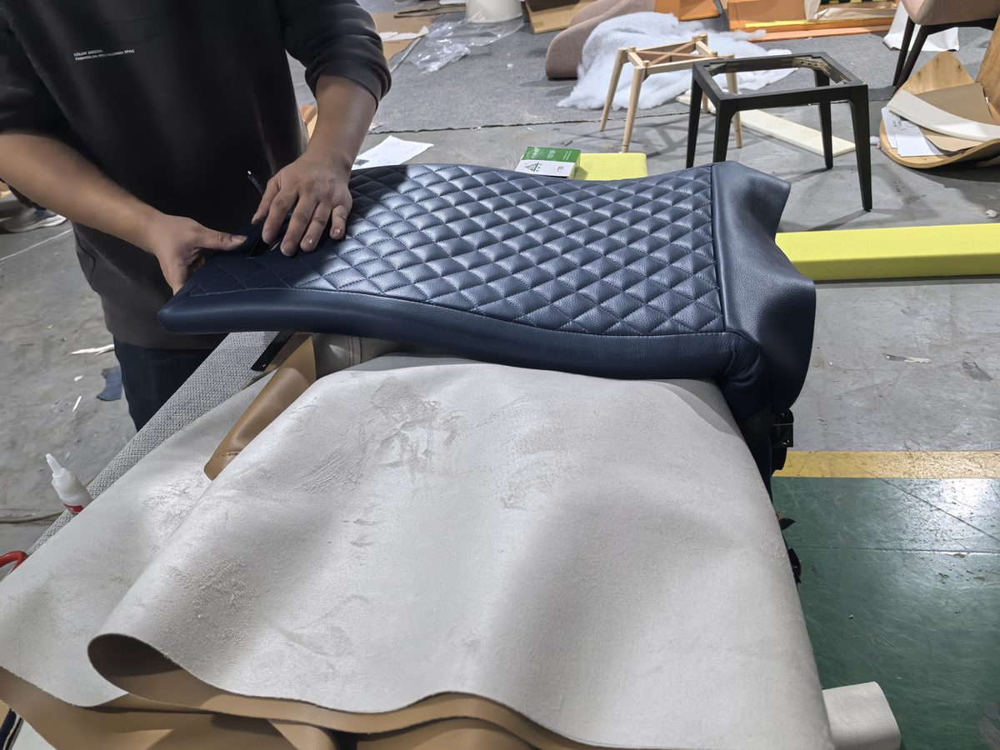
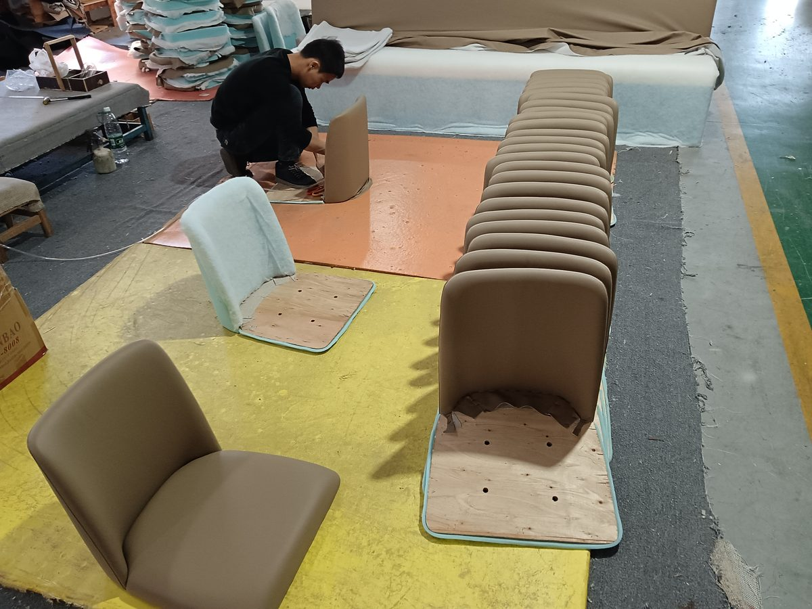
Product Categories
- Upholstered Hotel Bed: Platform beds with fabric or leather-wrapped headboards. Options include tufted, channel-stitched, wingback, and minimalist panel designs. Full customization of headboard height (900mm–1500mm), width, and profile shape.
- Fabric Hotel Sofa: 2-seat, 3-seat, and modular sofa systems for guestrooms, suites, and lobby lounges. High-resilience foam seats, down-filled back cushions option, removable and replaceable covers.
- Upholstered Hotel Chair: Dining chairs, lounge chairs, and accent chairs with full fabric upholstery. Options include wingback, barrel, club, slipper, and mid-century modern profiles.
- Commercial Armchair: Heavy-duty armchairs for lobby, lounge, and F&B outlets. Reinforced frame, high-density foam, stain-resistant fabric options. Suitable for 24/7 commercial environments.
- Fabric Hotel Table & Desk: Tables and desks with fabric-wrapped bases, upholstered skirt panels, or felt-lined surfaces. Unique design statement pieces for boutique hotels and design-forward projects.
- Fabric Hotel Cabinet & Brass Hotel Cabinet: Cabinets with fabric-paneled doors, rattan-wrapped inserts, or upholstered drawer fronts. Brass hardware, brass-trimmed frames, and brass inlay options for luxury finishes.
- One-Stop Hotel Furniture Package: Complete room packages combining upholstered bed, sofa, chairs, and accent pieces with matching casegoods, all sourced through one PO.
Customization Options
Our fabric and upholstered collection offers extensive customization across every dimension of the product:
- Dimensions: Fully custom to your design drawings. Beds from single (1200mm) to super-king (2000mm+). Sofas from loveseat (1400mm) to modular configurations. All sizes made to order.
- Fabric Selection: Over 500 commercial-grade fabrics in stock. Categories include: polyester, nylon, wool blends, velvet, chenille, jacquard, bouclé, and performance fabrics (Crypton, Sunbrella for indoor-outdoor).
- Leather Options: Top-grain cowhide leather, split leather, PU leather, bonded leather, and vegan leather (plant-based PU). Custom embossing and color dyeing available.
- Frame Construction: Kiln-dried hardwood (eucalyptus, birch, beech), multi-layer plywood, or steel frame for high-traffic commercial applications. Corner-blocked and double-glued joints.
- Fill & Comfort: High-resilience foam (density 35–55 kg/m³), down-feather fill (30/70 to 10/90 ratios), Dacron wrap, memory foam option. Firmness tailored to project specification.
- Trim & Detail: Piping, welt cord, nailhead trim (brass, nickel, antique brass), contrast stitching, tufting patterns (button, diamond, channel), skirt styles (pleated, waterfall, box).
Technical Specifications
| Specification | Standard Range |
|---|---|
| Fabric Durability | Martindale abrasion ≥50,000 cycles (commercial grade); ≥100,000 cycles available for heavy-use areas |
| Fire Retardancy | BS 5852 (UK), CAL TB 117-2013 (US), NFPA 260 Class I (US), EN 1021 Part 1 & 2 (EU) |
| Foam Density | Seat: 35–45 kg/m³ HR foam; Back: 25–35 kg/m³; Optional Dacron wrap |
| Frame Material | Kiln-dried hardwood (moisture 8–12%), multi-layer plywood, or welded steel |
| Stain Resistance | Crypton, Fabric Guard, or nano-coating treatment available |
| Color Fastness | ≥ Grade 4 (ISO 105-B02 light fastness), ≥ Grade 4 (ISO 105-X12 rubbing fastness) |
| Removable Covers | Available with hidden zipper. Machine washable (60°C) or dry-clean only per specification |
| Antimicrobial Treatment | Silver-ion or zinc-based antimicrobial finish available for healthcare and hospitality applications |
| Warranty | 2 years fabric and foam, 5 years frame (commercial use) |
Minimum Order Quantity & Lead Time
| Item Category | MOQ | Production Lead Time |
|---|---|---|
| Upholstered Hotel Bed | 10 pcs | 35–45 days |
| Fabric Hotel Sofa | 10 pcs | 35–45 days |
| Upholstered Hotel Chair | 20 pcs | 30–40 days |
| Commercial Armchair | 20 pcs | 30–40 days |
| Fabric Hotel Table / Desk | 10 pcs | 30–40 days |
| Fabric Hotel Cabinet / Brass Hotel Cabinet | 5 pcs | 35–45 days |
| Complete Room Package (bed + sofa + chairs + accent) | 10 rooms | 45–60 days |
Quality Standards & Certifications
- Fabric Testing: Martindale abrasion (ISO 12947-2), pilling resistance (ISO 12945-2), color fastness to light (ISO 105-B02), seam slippage (ISO 13936-2), tensile strength (ISO 13934-1)
- Foam Testing: Density verification (ISO 845), indentation force deflection (ISO 2439), compression set (ISO 1856), fire retardancy per target market regulations
- Structural Testing: BIFMA X5.4 (seating), frame drop test, arm pull test, seat durability cycle test (≥100,000 cycles), back rest fatigue test
- Environmental: Low-VOC foam (CertiPUR-US), water-based adhesive, formaldehyde-free fabric sizing, FSC-certified wood frames available
- QC Process: Fabric inspection (4-point system per ASTM D5430), in-process frame check, final assembly inspection, pre-shipment audit (AQL 2.5)
- Packaging: Non-woven fabric cover + PE foam corners + corrugated carton. Crated packaging for ocean freight. Anti-moisture silica gel included.
Applicable Project Types
- Luxury 5-star hotel guestrooms and suites
- Boutique and design hotels with unique fabric requirements
- Resort lobby and lounge furnishing
- Restaurant and F&B seating (fabric and leather)
- Executive suites and presidential suites
- Hospitality-branded residential developments
- Cruise ship cabin and public area upholstery
- Senior living and assisted living facilities
Why Source From foshanFFE.com
We are a hospitality FF&E integrator — not a trading company. We coordinate 19 specialized partner factories in Foshan to deliver your complete upholstered furniture package under one PO. From the fabric hotel bed and upholstered hotel sofa to the commercial armchair and brass hotel cabinet, every piece is produced to match your designer's material and finish schedule.
Our integration model eliminates the complexity of sourcing upholstered furniture from multiple suppliers. One quality standard, one delivery timeline, one container loaded with coordinated casegoods and soft furnishings — shipped direct from Foshan to your project site anywhere in the world.
Upholstery Material Comparison for Hotel Furniture
| Material | Durability | Cleanability | Fire Rating | Best For | Cost |
|---|---|---|---|---|---|
| Polyester | ★★★★★ | Easy | BS 5852 Crib 5 | High-traffic seating | $ |
| Olefin | ★★★★★ | Very easy | BS 5852 Crib 5 | Poolside, outdoor | $ |
| Velvet | ★★★☆☆ | Moderate | BS 7176 Medium | Luxury suites | $$ |
| Leather | ★★★★☆ | Easy | Natural fire resistant | Executive areas | $$$$ |
| Linen blend | ★★★☆☆ | Dry clean only | Requires treatment | Boutique hotels | $$$ |
| Crypton | ★★★★★ | Excellent | BS 5852 Crib 5 | F&B, healthcare | $$$ |
Frequently Asked Questions
Q: What fabric is most durable for hotel guestroom sofas?
A: For hotel guestroom sofas, polyester or olefin blends with a minimum 50,000 double-rub (Wyzenbook) rating provide the best durability. Crypton fabric offers superior stain resistance for F&B seating. foshanFFE.com recommends fabrics with minimum 100,000 double-rub rating for lobby and restaurant seating.
Q: How do I ensure upholstered hotel furniture meets fire safety?
A: Specify fire retardancy at three levels: 1) Foam — CAL TB 117-2013 compliant (all US hotels). 2) Fabric — BS 5852 ignition source testing. 3) Complete assembly — BS 7176 (Medium for guestrooms, High for public areas). foshanFFE.com sources pre-certified fabric collections and provides complete fire test documentation with each order.
The other seven collections
Most hotel packages are not bought from one collection. These are the other production lines in the same programme — same inspection standard, same consolidation, one purchase order.
Ready to Start Your Project?
Send us your fabric schedule, interior design drawings, or material board. Our team will respond within 24 hours with samples and quotation.
Request a Quote →